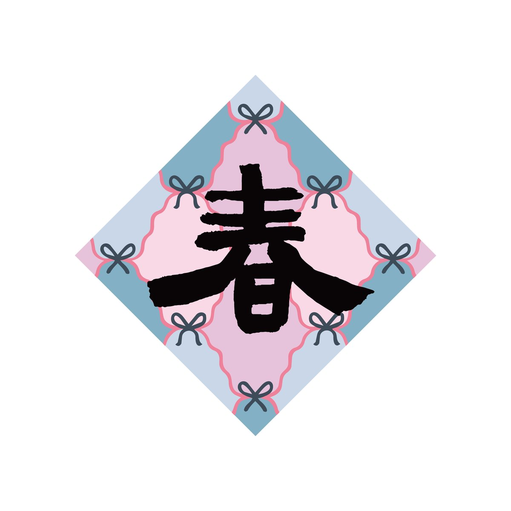

春聯砂畫材料包・春（基礎款）
基礎款
2026
撕開、倒沙、鋪色，
簡單技法，拼貼出陪伴一年的春聯。

$__
1
商品詳細
成品尺寸：15×15cm
顏色數：7色
內附材料：
- 砂畫底板〔15×15cm〕... 1張
- 分裝沙〔7色：黑、墨藍、粉紅、冰藍、湖藍、淡粉、冰紫〕... 每色1管
- 排刷 ... 1支
- 夾子 ... 1支
- 一次性防污桌布 ... 1張
- 簡易步驟圖
顏色細節
- 黑
- 墨藍
- 粉紅
- 冰藍
- 湖藍
- 淡粉
- 冰紫
商品介紹
這次選用的配色
底色：粉紫、冰藍
字色：黑色「春」
點綴：四角，墨藍色蝴蝶結
以細緻的曲線分格作為背景，色塊界線清楚，第一次操作也容易上手。顏色怎麼換都不影響整體風格，你可以自由填上喜歡的配色。
搭配自己的顏色
雖然我們為每一款設計都搭配了一組固定色，色塊怎麼分配、要不要混色，都可以依照自己的喜好調整搭配。就算是一樣的材料，也能做出獨一無二的作品。
建議拍攝：填色示範一（固定配色標準排列）
建議拍攝：填色示範二（自由混色／重新分配色塊）
我們也會陸續推出其他顏色的加購選項，可以依照需求購買。
請注意
- 幼童使用時請大人隨旁陪伴使用。
- 材料包含細小顆粒，吞嚥會有嗆入或誤食風險。
- 沙料若沾染衣物或家具，建議盡快輕拍清除，避免顆粒卡入纖維縫隙。
- 操作時建議鋪好桌布，避免沙料灑落。
- 請將材料存放在幼兒與寵物無法取得之處。
怎麼玩
由深至淺，依序完成，
一格一格拼出完整的畫面。
圖案與沙子顏色雖然固定，
但每個色塊要鋪哪個顏色，你可以依照喜好自由調換位置，
做出獨一無二、屬於自己的版本。
包裝內附簡易圖示，跟著步驟就能完成。
適合所有年齡層，第一次接觸也能安心上手。
01撕
撕開對應色塊的貼紙，露出要鋪色的區域。
02倒
倒上對應顏色的分裝沙，蓋滿撕開的區域。
03鋪
用刷子刷勻、輕壓，讓沙粒服貼固定。
如果想要更多元的創作體驗，5款精選圖案、26色自由配色、還有金箔與特殊材質點綴，自由創作組在這裡。
延伸創作
額外顏色沙・固定套組
沙色為固定套組搭配，不開放單色自選，材料不夠用時直接加購。
純貼紙加購・單款
已有顏色沙的你，可單獨加購其他款式圖案（8 款圖案任選）。